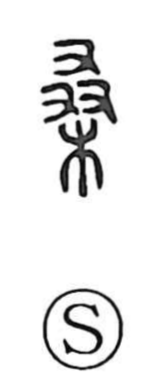

桑

Uncategorized
Kun: kuwa | On: sou
mulberry ・ mulberry tree
Explanation
桑 is a pictograph of a mulberry tree laden with luxuriant leaves, hence the meanings “mulberry” and “mulberry tree.” Sericulture was already practiced in the Shang period, and oracle-bone inscriptions even depict silkworms on a mulberry leaf; those inscriptions also attest to the worship of a silkworm deity. The figure of the mulberry-leaf-picking maiden—a woman climbing the tree to gather leaves—appears frequently in later literature.